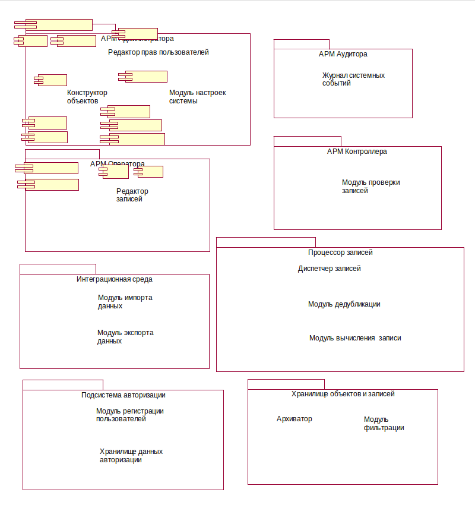
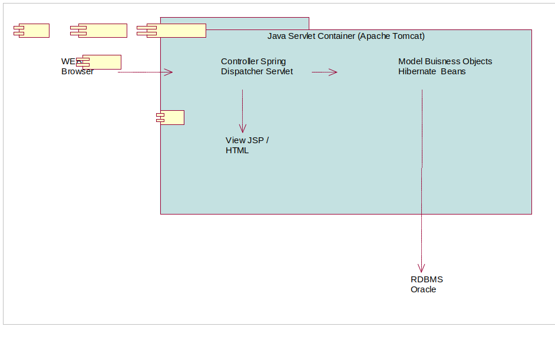

Система URM предназначена для:
Система URM является распределенной и строится на основе технологий J2EE. Система состоит из набора автоматизированных рабочих мест (АРМ), объединенных в одно WEB приложение. Система разбивается на подсистемы в соответствии с ролями работающих в ней пользователей, а также с выделением в отдельные модули функциональности используемой в разных сценариях. На рисунке приводятся основные компоненты системы.  АРМ предоставляют пользователям WEB интерфейс к системе URM и реализованы в модели Spring WEB MVC Framework. Система строится в рамках Spring IOC контейнера, с использованием Hibernate ORM для работы с СУБД Oracle:  |